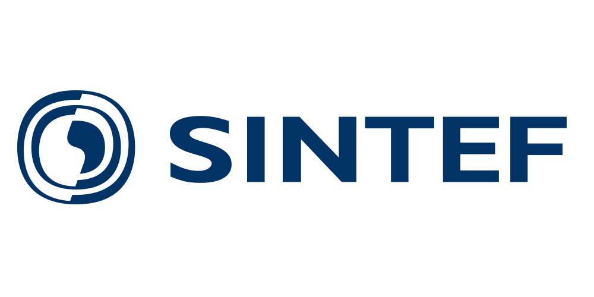
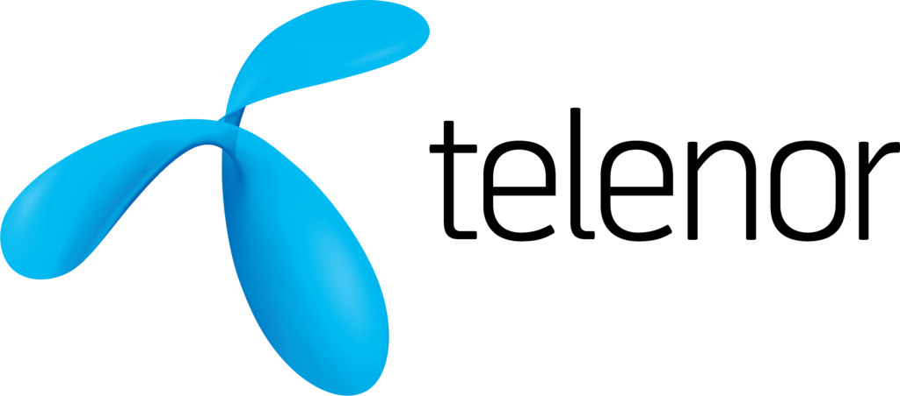
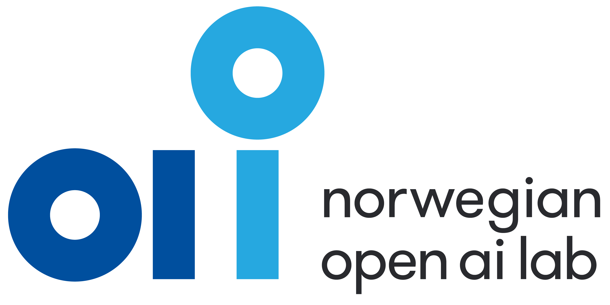

About the workshop
Machine Learning for Irregular Time Series (ML4ITS) is a vital research area addressing real-world challenges in finance, healthcare, and environmental science where data exhibits irregular sampling, missing values, noise, and multiresolution characteristics. This workshop brings together researchers to advance state-of-the-art techniques for handling scarce data, limited labels, and uncertainty quantification in time series modeling.
We invite submissions on:
- Generative models (GANs, diffusion, masked modeling)
- Self-supervised and unsupervised learning
- Responsible AI (explainability, uncertainty)
- Transfer learning and few-shot learning
- Transformers, attention mechanisms, and graph neural networks
- Anomaly detection and foundation models
This year's focus areas: Generative models for time series, Self-supervised learning, Responsible AI, and Foundation models trained on large-scale multimodal data.
The workshop also features a Special Session on Time Series for Space Applications. Learn more in the Time Series for Space Applications section.
Special Session: Time Series for Space Applications
Machine learning is vital for autonomous space operations. Spacecraft telemetry presents unique challenges with irregular sampling, missing data, and complex dependencies. Two curated datasets have been released by ESA, Airbus Defence and Space, and KP Labs:
Topics: Time series modeling for telemetry, anomaly detection, forecasting, onboard ML, data compression, and explainable models for space. Cross-domain applications include finance, robotics, IoT, and healthcare.
Organization
Organizers
Massimiliano Ruocco (NTNU/Sintef, Norway) is a Senior Researcher at Sintef Digital and Associate Professor of Machine Learning at NTNU. He manages the "Machine Learning for Irregular Time Series" research project funded by the Norwegian Research Council and has more than 10 years of experience in academic and industrial research in ML and AI. His research currently focuses on Deep Learning for Time Series Analysis and data efficient machine learning.
Erlend Aune (NTNU, Norway) is Associate Professor of Statistical Learning at NTNU and co-manages the ML4ITS research project funded by the Norwegian Research Council. He brings extensive industry experience from his previous roles as Director of Data Science at fintech company Exabel and CTO of HANCE. His research interests include machine learning for time series problems, unconventional data in time series, and robustness of time series models.
Claudio Gallicchio (University of Pisa, Italy) is an Associate Professor of Machine Learning at the University of Pisa specializing in Recurrent and Reservoir Computing models. He is the founder and former chair of the IEEE CIS Task Force on Reservoir Computing and has extensive experience in organizing workshops and special sessions at major ML conferences. He serves as associate editor of IEEE Transactions on Neural Networks and Learning Systems and leads EU and Italian-funded research projects in neuromorphic computing.
Krzysztof Kotowski (KP Labs, Poland) is the Head of Machine Learning at KP Labs, a space-focused company and research center in Poland. He specializes in cutting-edge applications of signal processing, machine learning, and deep learning in biomedical engineering, EEG analysis, protein folding, and space exploration. His work has led to 4 patents and over 30 peer-reviewed publications in top-ranking ML and signal processing venues.
Program Committee
- Michail Spitieris (Researcher, Sintef DIGITAL)
- Jo Eidsvik (Full Professor, NTNU)
- Leif Anders Thorsrud (Professor, BI)
- Vegard Larsen (Researcher, BI/Norges Bank)
- Andrea Ceni (Researcher, University of Pisa, Italy)
- Bogdan Ruszczak (Assistant Professor at Opole University of Technology, Research Scientist at KP Labs, Poland)
- Jakub Nalepa (Associate Professor at Silesian University of Technology, Head of AI at KP Labs, Poland)
Submission
Papers must be written in English and formatted according to the Springer LNCS guidelines followed by the main conference. Submissions should be made through the workshop's CMT submission page. After logging in, create a new submission in your author console, and select the track on "ML4ITS2026". Regular and short papers presenting work completed or in progress are invited.
- Regular papers are expected to provide original and innovative contributions. Max length: 14 pages including references.
- Short papers, describing innovative ongoing research showing relevant preliminary results, are maximum 6 pages.
- We also allow presentation only contributions (no page restrictions, not included in proceedings), which may include work already published elsewhere or ongoing research that is relevant and may solicit fruitful discussion at the workshop.
Papers authors will have the faculty to opt-in or opt-out for publication of their submitted papers in the joint post-workshop proceedings published by Springer Communications in Computer and Information Science, organised by focused scope and possibly indexed by WOS. Notice that novelty is not essential for contributed papers that will not appear in the workshop proceedings, as we invite papers that have already been presented or published elsewhere with the aim of maximizing the dissemination and cross-pollination of ideas among the topic of the workshop.
At least one author of each accepted paper must have a full registration and be in-person to present the paper. Papers without a full registration or in-presence presentation won't be included in the post-workshop Springer proceedings.
Dates
The following deadlines are in AoE time zone (UTC – 12).
- Paper submission deadline: June 5, 2026
- Acceptance notification: July 5, 2026
- Camera Ready: July 10, 2026
- Workshop date: September 11, 2026
Accepted Contributions (Posters)
Event Schedule
| Time | Session |
|---|---|
| Event schedule is currently empty and will be updated soon. | |
Partners


